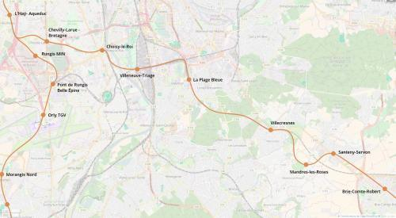
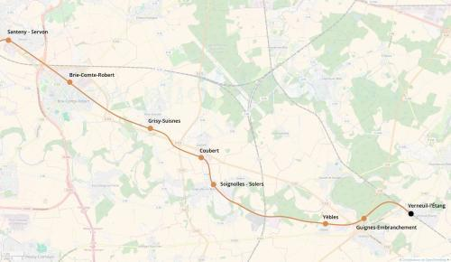

RER F Verneuil-l'Étang
RER F Verneuil-l'Étang
L'Haÿ-les-Roses - Verneuil-l'Étang
Création de la ligne F du RER.
Cette branche correspond à la réouverture de la ligne de la Bastille entre Boissy-Saint-Léger et Verneuil-l'Etang. Elle est complémentaire de l'extension du RER A à Brie-Comte-Robert.
En correspondance avec la tangentielle Seine-et-Marne à Verneuil l'Étang, le RER A à Villecresnes - Hippodrome, le métro 8 à la Valenton - La Plage Bleue, les RER C et D à Choisy-le-Roi et Villeneuve-Triage. Cette branche du RER F sera un nouvel axe pour relier le sud de la Seine-et-Marne au reste de l'Île-de-France.
Sa position lui donne un potentiel pour en faire la dorsale d'une ville nouvelle autour de Brie-Comte-Robert organisée sur un schéma comparable à Marne-la-Vallée.
Voir les autres projets associés à cette ligne
Cartes

Cliquer pour agrandir

Cliquer pour agrandir
Stations
Si ce projet vous intéresse n'hésitez pas à le (re-)partagez sur les réseaux sociaux ou par courriel ou à en parler autour de vous.
Si vous souhaitez travailler à la concrétisation de ce projet, passez à l'action et contactez nous.
Commenter